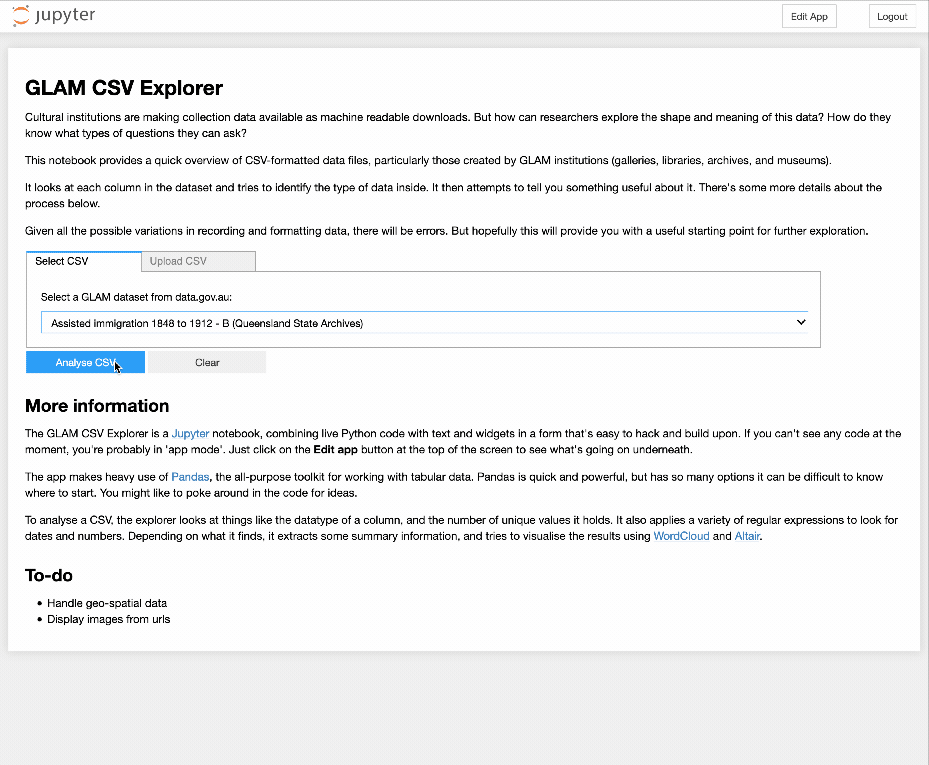
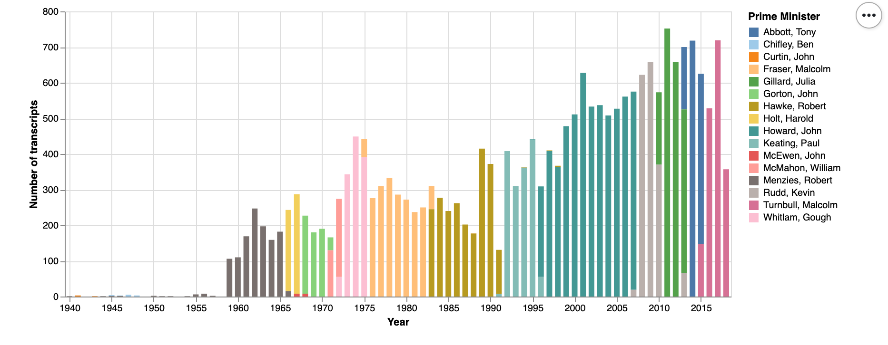

GLAM data workshop – Digital Studio, University of Melbourne, 15 August 2019¶
FAQ¶
Where do I find this page?
Just go to https://glam-workbench.github.io/ and look under the 'Workshops' menu.
What do I need to try the activities?
Nothing but a web browser and an Internet connection. We'll be using a cloud-based service called Binder to run the live examples. Oh, but a Trove API key would be handy.
Can I try this at home?
Absolutely! This page and the linked notebooks will stay online, so feel free to work through the examples at any time.
Can I share this workshop/notebook/site?
Please do! If you're tweeting please add #glamworkbench, or tag me in (I'm @wragge)!
Seeing differently¶
Activity 1: A different perspective on Trove¶
- What do you know about Trove’s newspapers?
- Open up the Newspapers home page.
- Search for something you’re interested in.
-
What do we know about that search? What’s in the results? How do they change over time? What’s missing?
-
Go to QueryPic Deconstructed. (It might take a little while to load – just be patient!)
- Enter your Trove API key.
- Enter the same search term in the box and click Add query.
- Click Create chart.
- What do you see? Anything interesting or unexpected?
- Try entering multiple search terms. (Just hit Add query to add each term or Clear all to start again.)
- What has changed from the standard search interface? How might you use this in your own research?
Collections as data¶
We already use GLAM collections in our research, why would we want to access and analyse GLAM data directly? Why would we want collections as data?
- Shift scales – zoom in and out, see your searches in a range of contexts
- Find patterns – look for shifts in language, the impact of events or policies, changes over time and space
- Extract features – find people, places, and events
- Make connections – build contexts, identify gaps and overlaps
To help people explore these sorts of possibilities, I've been assembling examples based on the collections of a variety of GLAM institutions. The GLAM Workbench is not about specific tools or technologies, it’s about introducing opportunities for seeing GLAM collections differently. It’s a collection of examples for you to use, change, and hopefully learn from.
The GLAM Workbench makes heavy use of Jupyter notebooks. Jupyter is a web-based framework that lets you create and share 'computational narratives' – web pages that blend live code with text, images, examples and more. They break down the distinction between tool and tutorial, enabling you to undertake useful tasks while learning about what's going on underneath the hood.
Here’s a 7 minute intro to the GLAM Workbench…
And here's a slightly longer discussion of some of the possibilities of working with collections as data…
But what is GLAM data?¶
GLAM data can take many forms and have a range of characteristics. It's not just a matter of the content of the data, but also how it's controlled, structured, and shared that affects what we can do with it. Working with GLAM data means constantly grappling with questions of access and usability.
Here are a few categories of GLAM data you might meet. There are lots of overlaps between these categories, but it's a place to start.
- Metadata (not content)
- Structured text / data
- Unstructured text
- Images
- Derived data
- User generated data
- Activity data
- Born digital data
Metadata¶
Data about data! In regards to GLAM collections we’re probably talking about the sorts of descriptive information you might find in a catalogue or collection database rather than the digitised objects themselves.
Examples:
- Closed Access – What files in the National Archives of Australia are closed to public access? What can we know about what we’re not allowed to see? You can harvest your own dataset using this notebook. Datasets from 2017, 2016, and 2015 are available on Figshare.
- Exploring digitised maps in Trove – I knew the NLA had been had been creating a lot of high-res digital version of historic maps. But how many, and how big?
Structured data or text¶
Think data with rows and columns, the sort of thing you might open with a spreadsheet program; although you might also find more complex GLAM data as XML or JSON. The main thing is that the data is organised into fields. This should enable us to do things with the data in those fields. If a field contains dates, for example, we could chart them over time, or extract the years. We sometimes also call this sort of data 'machine readable'. Of course this assumes that the data has been formatted consistently, and as anyone who works with GLAM data will tell you, this is a dangerous assumption to make...
Examples:
- Here's more than 900 GLAM datasets (!) harvested from government data portals. Here’s a big, human-readable list of the datasets.
- NSW State Archives online indexes – 64 different indexes containing 1,499,259 rows of data!
Activity 2: GLAM CSV Explorer¶
What sort of structure does structured data have and how can we use it to help us understand the content? Let's have a little play with the GLAM CSV Explorer which generates automatic previews of more than 500 CSV files harvested from data.gov.au.
There's not much to it:
- Go to the live version.
- Select a file from the dropdown list and click the button.
- Rinse and repeat. Do you get a sense of the types of data in the files?

Unstructured text¶
Of course text has structure. It has sentences and paragraphs and nouns and proper nouns and verbs, and even punctuation. But most of these structures are implicit, they're not neatly labeled for us to extract and manipulate. We can train computers to find those structures, but it's not a simple process.
Examples:
- Commonwealth Hansard, 1901–80 – Ok, so this is a bit of a structured/unstructured hybrid. The spoken text, as recorded by Hansard, is itself unstructured, but it's embedded in nicely-structured XML files that include information about who spoke the text and when. Whatever it is, there's a lot of it!
- Trove journals – As well as newspapers, Trove includes a growing range of digitised journals. Like the newspapers, they've been OCRd and you can download the full text. To save you a lot of pointing and clicking I've harvested the text of 30,462 issues from 384 journals. That's 7gb of text. Get your bulk downloads here!
Images¶
Images are data too – they can be processed and manipulated in all sorts of interesting ways to expose features and patterns. Sometimes we might also want to find particular types of images amongst a large collection.
Examples:
- 'How hard would it be to find the infamous full page editorial cartoons in the Bulletin?', I foolishly wondered. After several false starts and much trial and error, I ended up with a collection of 3.471 cartoons – at least one for every issue from 1886 to 1952. The gory details are in this notebook.
- For more images in bulk, you could try harvesting the covers of a journal in Trove (some of them are really beautiful). Or what about downloading all the digitised files from a series in the National Archives of Australia (NAA). Someone [name redacted] might have already harvested all the publicly available ASIO surveillance files.
Derived data¶
Sometimes in processing GLAM data we create new GLAM data that highlights particular features, provides new access points, or adds structure and context. Yay, more data!
Examples:
- Finding faces – I started playing around with facial detection software about 8 years ago when I created this wall of faces from NAA records used in the administration of the White Australia policy. I still think its an interesting way of changing our perspective on large photographic collections. Here's some more recent experiments with photos from the State Library of NSW's Tribune collection.
- If you've ever wanted a collection of 200,000 redactions extracted from ASIO surveillance files, have I got a dataset for you – images, metadata, and even a browsable interface. But watch out for the #redactionart!

User generated data¶
The users of GLAM collections can also create data – through crowdsourced transcription projects, by adding tags and comments to guide others, or by building and sharing their own collections.
- We set up the Real Face of White Australia project to transcribe structured data from forms used in the administration of the White Australia Policy. The data itself is shared through its own repository, and used to build tweet-sized stories.
- I love Trove lists because they're an insight into people's passions (do you know the story of lawnmower man?). But you can also extract data about Trove lists to explore their contents at scale.
Activity data¶
Changes made to collections can also be recorded and shared.
- Here's a notebook that explores patterns in the OCR corrections volunteers have made to Trove's newspapers. And if you want up-to-date info, here's a live OCR Correction Ticker.
Unpacking interfaces, exploring data, & thinking critically¶
It's rarely the case that we can just download and use GLAM data. Even when the data is openly-licensed, well-structured, and easy to access, we still have to spend time getting to know it. What are its limits, and its assumptions? Many of the notebooks in the GLAM Workbench are intended to help with this exploratory phase. Before you can use GLAM data, you have to play with it.
From here on we're going to working with live Jupyter notebooks running on Binder. In actual fact, you already have, because QueryPic and the CSV Explorer were also live notebooks, it's just that they were running with all the code hidden. But now you'll get a chance to see and change the code.
Jupyter notebooks quick start
Don't panic! Jupyter notebooks are meant to encourage experimentation, so don't feel nervous. Just try running a few cells and see what happens! Here's some hints:
- Code cells have boxes around them.
- To run a code cell click on the cell and then hit Shift+Enter. The Shift+Enter combo will also move you to the next cell, so it's a quick way to work through the notebook.
- While a cell is running a * appears in the square brackets next to the cell. Once the cell has finished running the asterix will be replaced with a number.
- In most cases you'll want to start from the top of notebook and work your way down running each cell in turn. Later cells might depend on the results of earlier ones.
- To edit a code cell, just click on it and type stuff. Remember to run the cell once you've finished editing.
Activity 3: Trove newspapers over time¶
Let's go back again to QueryPic and explore the sorts of assumptions we need to unpack when we're exploring Trove's newspapers over time.
Just click on the links below to launch the notebooks on Binder. Then just follow the instructions, hitting Shift+Enter on each cell to run it. You'll need to have your Trove API key ready to insert where indicated.
- Visualise Trove newspaper searches over time
- Visualise the total number of newspaper articles in Trove by year and state
Hopefully these notebooks will give you a sense of how the nature of the digitised newspapers themselves can be critically analysed.
Activity 4: What's in the National Museum of Australia?¶
As I mentioned, you have to spend time playing around to understand both the limits and the possibilities of a new dataset. Recently the National Museum of Australia opened up access to its collection data through an API. Here's some notebooks that poke about inside...
Note that I've pre-harvested the objects and places data. But before you start working on it, you'll need to follow the link to unzip the data file.
-
Start by exploring object records
-
Click on the 'unzip a pre-harvested dataset' link and run the cell in the linked notebook to prepare the data.
-
Work through the 'Exploring object records' notebook. Think about the sorts of metadata that have been captured.
-
When you've run all the cells, click on the link to the 'time' notebook at the top of the page.
-
This notebook explores the temporal dimensions of the data. When were objects created or collected? There's a few puzzles along the way!
-
When you've run all the cells, click on the link to 'explore places'.
-
This notebook unpacks spatial information and creates some maps.
What's missing from the NMA data? What other perspectives might we explore?
Activity 5: Exploring the text of Trove's journals¶
What sort of patterns can we observe across the issues of a journal? Let's try working with some unstructured text.
Apologies in advance – this notebook is hot off the presses and is missing a lot of documentation. But just work it using the trusty ol' Shift+Enter and you should see some magic happen.
You'll need to select a journal from the dropdown list and then download the OCRd text from the repository on CloudStor. For this exercise, I'd suggest you start by selecting something that doesn't have more than a few hundred issues – Art in Australia for example.
Lunch break¶
Handy hints & hacks¶
Sometimes things that should be easy, aren't. This applies to GLAM collections as much as it does to everything else in life. But at least in the case of GLAM collections we can build and share hacks and hints to overcome at least some of the frustrations.
Activity 6: Get an image of a newspaper article in Trove¶
You can download just dowload a newspaper article from the Trove web interface can't you? Well, sort of. You can generate an HTML page which embeds images of the article, although they might be sliced up in strange ways that make them almost unreadable. Sigh... It's often easier just to do a screen capture. But here's an alternative.
- Find an article in Trove. For bonus points find an illustrated article spread over more than one page.
- Click here
- When the page has loaded, paste the article url into the box.
- Hit the Get Images button!
- Download your image.
You might have guessed that this little app is another Jupyter notebook in disguise. Here's a few other apps/notebooks that you might find handy for getting or moving data.
Apps:
- Create a thumbnail image from a Trove newspaper article
- Save a Trove newspaper page as a (high-res) image
- Download the contents of a digitised file from RecordSearch
Notebooks:
First catch your data¶
One thing we haven't really covered yet is where you find GLAM data and how do you get it in a usable form. As a starting point, I've created a list of GLAM data sources.
But as I suggested earlier, access is not a straightforward thing – just because data is online, doesn't mean it's easy to download or use. Here's some of the real world categories of GLAM data that we often have to deal with:
- Machine-readable but coding required for download
- Downloadable but not easily findable
- Structured but not downloadable
- Downloadable but in many separate pieces
Machine-readable but coding required for download¶
Trove makes a lot (but not all!) of its collection data available via an API (Application Programming Interface). So do other GLAM institutions like the NMA and the Museums Victoria. I love APIs, but to get data out of them you need to be able to code. How do we fill the gap between APIs and the researchers who want to use the data they provide? Here's some notebooks that provide an interface between you and the API, making it easy to explore and download the data you're interested in.
- Trove newspaper harvester
- Harvest records from the NMA API
- DigitalNZ – New Zealand's Trove!
- Te Papa collection API
Downloadable but not easily findable¶
I've already mentioned that there's lots of GLAM datasets available through the data.gov.au portal, but who would have known it? In total there's 948 datasets from 22 organisations. Some of these are more interesting than others, but there’s some really rich historical data amongst them. However, unless you know where to look they can be hard to find. Datasets are often buried deep in organisational websites, and while data.gov.au has a good search interface, how many people would think to look there for data from libraries?
Structured but not downloadable¶
Other than Trove, the collection I’ve spent most time wrestling with is that of the National Archives of Australia. The NAA’s online database, RecordSearch, doesn’t provide an API or download options, so to get data out you have to resort to a process known as screen-scraping — you have to write some code to extract the data you want from web pages. However, the data in RecordSearch is really rich and complex, so it’s worth the effort.
Another example in this category are the indexes to records created by the NSW State Archives and their volunteers. These indexes include things like names, places, and dates, and provide useful entry points into the records. But they’re also rich datasets. The indexes are openly licensed, they’re online, they’re searchable, but there’s no way of downloading them except by screen scraping. So I’ve harvested all the indexes and made them available as CSV files.
Screen scrapers are kludgey and prone to breakage, but sometimes it't the only way to get useable data out of GLAM websites. Here's some more examples:
- Harvest a series from RecordSearch
- Harvesting functions from the RecordSearch interface
- Harvesting a records search from Archway (Archives of New Zealand)
- Harvest the Library and Archives Canada naturalisation database, 1915-1946, by country
Downloadable but in many separate pieces¶
As I mentioned early on, when you work with collections as data you can play around with scale, zooming out from a single instance to look for patterns across thousands of files. But this is difficult if you’re only option is to manually download one file at a time. To make useful data our of a collection, sometimes you just have to bring the pieces together.
Commonwealth Hansard is an example of this. Sitting underneath the ParlInfo search interface are a lot of well-structured XML files, one for each sitting day in the Senate and House of Reps. But you can only download them manually — one at a time. I’ve harvested all the XML files from 1901 to 1980 and saved them to a separate repository. All those separate files have become a corpus for large-scale text analysis. The same goes for the transcripts of more than 20,000 speeches, media releases, and interviews by Australian Prime Ministers made available online by the Department of Prime Minister and Cabinet. They're online, they have metadata, and they're downloadable as XML files. But by harvesting them and making them easily downloadable in bulk, we change what's possible.

Trove’s API is great, but there’s some important data you can’t get through it – the content of Trove’s digitised journals, for example, can only be accessed through the web interface. I’ve created a series of notebooks to help you extract metadata, text, and digitised page images from the journals. To do this I've supplemented what's available through the API with extra data from screen scraping, and some reverse engineering of the web interface. I've done the same for Trove's digitised books.
Finding pathways¶
How do we start to put all this bits and pieces together in a way that allows researchers to pursue the questions that interest them across collections? Let's experiment with one possible pathway.
Activity 7: Zoom out, zoom in¶
-
First go back once again to the QueryPic visualisation of newspaper searches over time. But this time, I want you to play around with search terms until you find something you think might be worth exploring further. Perhaps there's an unexpected peak, or an interesting shift in usage between particular words.
-
Once you have identified your feature of interest, head to the Trove web interface and construct a search that focuses on that feature. For example, you might use the facets to filter your search by year, state, newspaper, or article type. For the purposes of this exercise, you want to limit the number of results in your search to a few thousand at most. (This is just so you don't spend the rest of the workshop waiting for your 253,000 newspaper articles to download...)
-
Copy the url of your Trove search.
-
Now we're going to feed your search url to the Trove Newspaper Harvester. Once again, you'll need your Trove API key.
-
Just paste your API query and your search url into the boxes where indicated.
-
Run the cell that says
%run -m troveharvester -- start $query $api_key --textto start your harvest.The Trove Newspaper Harvester is actually a command line tool, but I've embedded in this notebook to make it easier to use. There's also an app-ified version that makes it even easier!
The Newspaper Harvester downloads both the metadata about the articles in your search, and the OCRd text of each individual article. This means that we can explore the content of the articles in depth. It's worth remembering too that the Trove web interface only lets you see the first 2,000 articles in your search. The Newspaper Harvester can download many thousands of articles. I recently harvested more than half a million articles to explore the changing context of the words 'aliens' and 'immigrants'.
The notebook includes information on the structure of the metadata file.
-
Once your harvest is finished, click on the link at the bottom of the notebook that says 'Exploring your TroveHarvester data' to load a new notebook.
-
This notebook tries analysing the metadata file you just harvested in a number of different ways. It breaks the results down by newspaper, by time, and by place of publication. It also looks at the frequencies of words in the article titles. It's in need of an overhaul, but it's a useful starting point.
-
Once you've got some sense of the harvested metadata, it's time to look at the text contents of the articles themselves. Click on the link at the bottom of the notebook to explore word frequencies in the text content of the articles.
-
This notebook calculates word frequencies for each article and then aggregates these counts by year.
-
You can also explore how the frequency of particular words change over time. Under 'Visualise word frequencies over time' there's a cell where you can enter words that you want to investigate. Visualise the results as both a facet chart and a bubbleline chart.
-
Once you're ready to move on, click on the link at the bottom to open a notebook that calculates TF-IDF values for words in the articles.
-
TF-IDF scores are calculated by comparing the number of time a word appears in a single document to the number of times it appears in a collection of documents. Word frequencies point us to 'common' words, TF-IDF can indicate 'significant' words. This notebook aggregates the articles by year and then calculates TF-IDF values for each word in each year.
-
Once again you can explore how the TF-IDF values of specific words change over time.
So, did you find anything interesting? The point of this exercise was not to define a specific methodology, but to suggest different ways you might pursue a set of research questions through a number of shifts in scale. Of course there are many other things we could do to explore the article text (and more will be added to the GLAM Workbench in time). We could for example look for clusters amongst the articles by using topic modelling. Here's a great notebook by Adel Rahmani that explores topic modelling of Australian parliamentary press releases harvested via Trove.
Suggestions welcome¶
If you have suggestions for data sources, tools, or examples to add the GLAM Workbench, feel free to add them via GitHub.
Additional readings and resources¶
Here's a few sites and resources that came up in discussion:
- Explore Trove's digitised journals
- Hansard interjections as tweets
- Trove tips & tricks
- Digital Humanities Slack – Join me in the #dh-australia channel!